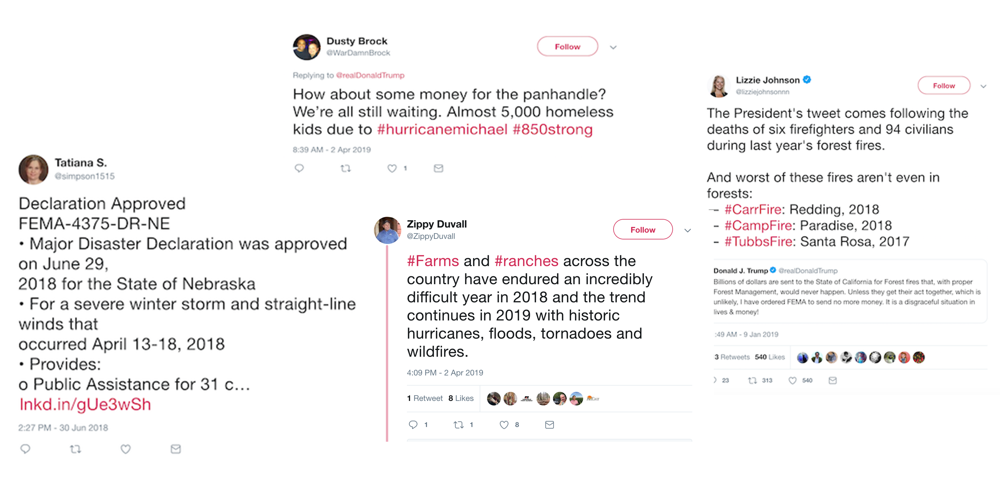
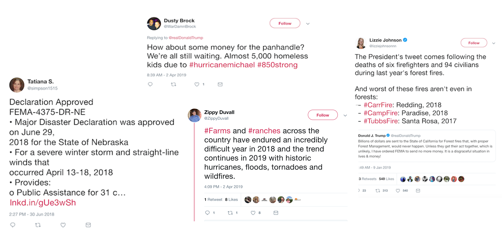

The 2018 California Camp Fire was the deadliest and most destructive fire in California history.
The 2018 California Camp Fire was the deadliest and most destructive fire in California history.
Scores of natural disasters slammed the U.S. in 2018, and with them came hefty price tags. Disasters like the California Camp Fire, Hurricane Florence and the bomb cyclone that swept through the East Coast together racked up estimated costs of over $75 billion.
Year after year, natural disasters like fires, flooding and snow storms have ravaged states across the country. These events pose two interesting questions: Who pays for all this rebuilding? And at what point is it no longer economically feasible to do so?
While some people do leave their homes permanently after a natural disaster, many stay and choose to rebuild, despite the risk of disaster striking again.
Robert Moran, a resident of Breezy Point, New York, for the last six years, had his home destroyed by flood damage from Hurricane Sandy. His home narrowly missed the fire that engulfed his neighbors’ homes only a few blocks away.". And yet he never considered relocating.
"After Sandy, I knew I was rebuilding and staying," Moran said. "The reward outweighs the risk." He highlighted the tight-knit community as a major reason for staying.
"It's a great place to raise kids," he said.
Andrea McCardle, a professor at the CUNY School of Law and an expert on urban land use, explained some of the reasons families choose to rebuild rather than relocate.
“Some people are just attached, there’s a real attachment to the land and the sense of place, and so people are generally, you know, reluctant to move,” McCardle said.
 

Twitter users from around the country chimed in on the disasters that affected them in 2018.
While there were several high-profile, costly disasters in 2018, there were many more weather-related incidents that didn’t make the headlines.
Overall, there were 59 natural disaster declarations across 33 states in 2018. Use the filter below to see where these disasters occurred and what type of weather emergency affected each state.
When rebuilding after natural disasters, "More money was often spent on the repairs than the properties themselves were actually worth," said McCardle.
Much of the money for rebuilding comes from the Federal Emergency Management Administration, or FEMA, which disburses funds to states when they declare a state of emergency. FEMA's funding comes from taxes paid by all Americans, regardless of whether or not they are individually affected by natural disasters.
While Moran didn't have flood insurance when Hurricane Sandy hit, he chose to take out a personal loan to rebuild rather than take a grant from FEMA, due to complications in the filing process.
However, many other people do accept FEMA disbursements. Who pays for those grants? It's a complicated question.
FEMA has a pool of money available once a major disaster is declared. That money is used on public assistance, individual assistance and hazard mitigation. If FEMA depletes their pool of funding, they can recieve additional relief funds from Congress.
Congress has a base fund of several million dollars that can be funneled into FEMA for disaster aid. There are also supplemental appropriations that are used, but those numbers vary wildly and depend greatly on the specific disaster. Because of this, it makes it difficult to pinpoint how much money each state is receiving from each disaster declaration.
According to Amir Jina, an environmental and development economist at the University of Chicago, it's an interconnected web of transfer payments which is paid for by more than just those who live in the disaster area.
"In terms of who's bearing the brunt of paying back for this, it's not just the local level," Jina said. "The costs are generally shared, much more so than we anticipate. So when something happens in Florida, it's not just Florida paying for it. It's the whole country."